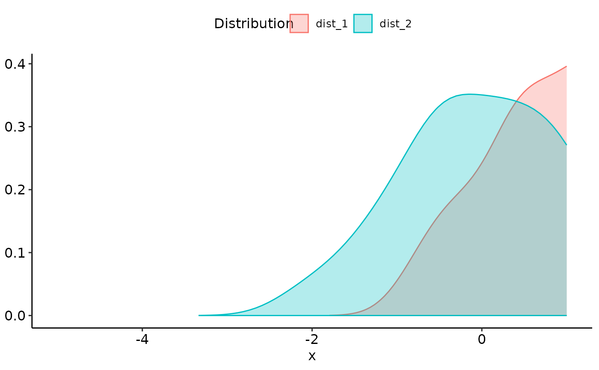

Plot multiple (usually >2) distributions
plot_distributions_multiple.RdPlot multiple (usually >2) distributions
Examples
sim_samples <- sim(
list(
"dist_1" = function(x) rnorm(x, mean = 1, sd = 1),
"dist_2" = function(x) rnorm(x, mean = 0, sd = 1)
),
do_melt = FALSE
)
density_estimates <- lapply(sim_samples, density, n = 100)
eval_seq <- seq(from = -5, to = 1, length.out = 250)
density_approximations <- tibble::as_tibble(vapply(density_estimates, function(densX) {
stats::approx(densX[["x"]], densX[["y"]], eval_seq)[["y"]]
}, numeric(length(eval_seq))))
density_approximations[["x"]] <- eval_seq
density_approximations_long <- tidyr::pivot_longer(
density_approximations,
cols = names(density_approximations)[names(density_approximations) != "x"],
names_to = "Distribution",
values_to = "Probability density"
)
restrictedROC:::plot_distributions_multiple(density_approximations_long)
#> Warning: Removed 182 rows containing missing values or values outside the scale range
#> (`geom_ribbon()`).
